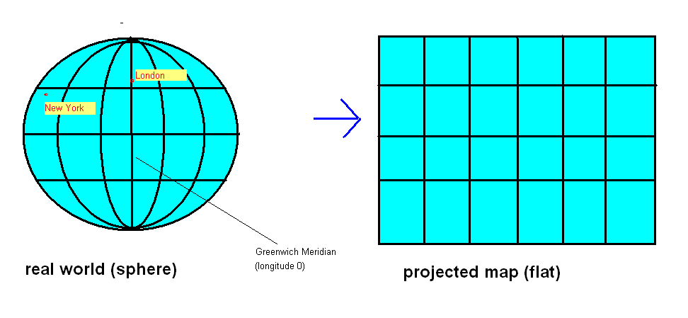
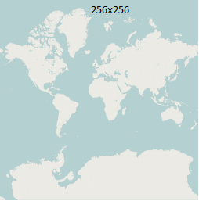
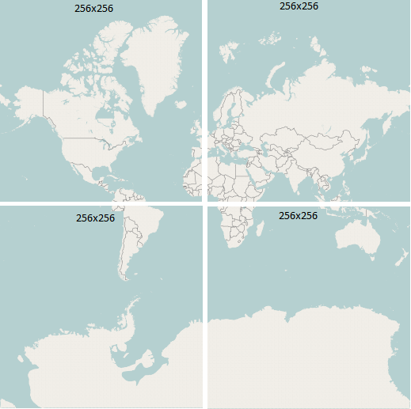

Websites and smartphone apps which show maps are very common these days. Many such sites use commercial mapping providers such as Google Maps and the like. However, such providers place restrictions on their users and the maps are often generic and do not show information for specialised users such as walkers and cyclists.
OpenStreetMap is a project to produce free, editable maps of the entire world. Users can contribute their own mapping data and the data can be used for free by anyone; see the OpenStreetMap site for more details. Users typically survey a road or path with a GPS device, such as a smartphone, and then draw the road or path on top of their GPS trace using editing software. The fact that the data is free means that developers can use it for their own pruposes, for instance, create their own maps or develop routing applications.
Leaflet is an open-source JavaScript mapping library which offers similar functionality to commercial web mapping services such as Google Maps. It allows you to embed a "slippy" map into a web page. However, unlike these other services, Leaflet can be used to display maps from a whole range of map providers, including, but not restricted to, OpenStreetMap.
In order to understand location-based applications, it is important to understand the coordinate system used on the earth. The most common coordinate system uses latitude and longitude. Latitude is a measure of how far north or south you are: the equator is at 0 degrees, while the North Pole is at 90 degrees North, we are at about 50 and Spain is at about 40. Longitude is a measure of how far east or west you are: 0 degrees of longitude is referred to as the Prime Meridian (or Greenwich Meridian) and passes through Greenwich, London. By contrast Germany is located between approximately 7 degrees and 15 degrees East, while New York is at 74 degrees West and the west coast of North America at approximately 120 degrees West.
So a given point on the earth can be defined via its latitude and longitude. We are at, approximately, 50.9 North (latitude) and 1.4 West (longitude). By convention, latitudes north of the equator and longitudes east of Greenwich are treated as positive, so we can also define our position as longitude -1.4, latitude +50.9.
An important consideration when doing web mapping is that the earth is not flat (it's more or less a sphere) while maps are flat. To display a curved surface on a flat piece of paper or computer screen, we need to do a projection and mathematically transform the latitude and longitude to coordinates suitable for representation on a flat surface. Why is this? Imagine any printed map of the earth. The map is equal width everywhere, from far northern areas such as Greenland or north Norway, to the equator. This does not match reality; since the earth is (more or less) a sphere, the circumference of the earth will be much greater at the equator than those far northern areas - indeed, at the poles, the circumference of the earth is zero!
For this reason, latitude and longitude must be transformed to so called projected coordinates if we want to represent them on a flat surface, such as a computer screen. The details of exactly how this projection is done is out of scope of this unit, but it is something to be aware of if you aim to do more with web mapping. Leaflet makes it easy for us by doing the transformation automatically.
The most common projection used with web mapping is informally referred to as the "Google Projection" (more formally, a type of Spherical Mercator), so called because Google Maps popularised it.

If you are interested, this is how the "Google Projection" works. It
consists of a series of zoom levels, with 0 the most zoomed out and
successive levels progressively zoomed in. How does this work? Basically,
zoom level 0 is defined as a flat map of the entire world, occupying
256x256 pixels, so that 360 degrees of longitude becomes 256 pixels and
180 degrees of latitude becomes 256 pixels, as shown below:

Each successive zoom level zooms in by a factor of 2 in
both directions, so
that at zoom level 1, there are four 256x256 pixel tiles, each covering
a quarter of the earth (N of the equator and W of the Prime Meridian;
N of the equator and E of the Prime Meridian;
S of the equator and W of the Prime Meridian and
S of the equator and E of the Prime Meridian):

With progressive zoom
levels, we continue zooming in by a factor of 2, so that zoom level 2 has
16 tiles (4x4), zoom level 3 has 64 (8x8), and so on. Each tile has
an x and y coordinate where x=0 represents the leftmost column of tiles,
y=0 represents the topmost row of tiles, and the tile with x=0 y=0
represents the top left tile (x=1 y=0 represents the second tile on the
top row, and so on)
Images from OpenStreetMap, (c) OSM contributors, licenced under CC-by-SA (not ODBL as they are old images)
We will be using OpenStreetMap as the mapping provider.
This is a basic example which creates a map. First the JavaScript:
const map = L.map ("map1");
const attrib="Map data copyright OpenStreetMap contributors, Open Database Licence";
L.tileLayer
("https://{s}.tile.openstreetmap.org/{z}/{x}/{y}.png",
{ attribution: attrib } ).addTo(map);
map.setView([50.908,-1.4], 14);
Then the HTML:
<html> <head> <title>Leaflet Example</title> <link rel='stylesheet' href='https://unpkg.com/leaflet@1.7.1/dist/leaflet.css'/> <script type='text/javascript' src='https://unpkg.com/leaflet@1.7.1/dist/leaflet.js'></script> <body> <h1>Leaflet Test</h1> <div id="map1" style="width:800px; height:600px"> </div> <script type='text/javascript' src='mapapp.js'></script> </body> </html>
Note the following:
Most web maps have some kind of overlay on the base map, for example a series of markers plotting the locations of pubs, cafes or other points of interest. We can even draw vector shapes (lines, polygons, circles) and add them to the map. This example creates a map and adds a feature to it:
const map = L.map ("map1");
const attrib="Map data copyright OpenStreetMap contributors, Open Database Licence";
L.tileLayer
("https://{s}.tile.openstreetmap.org/{z}/{x}/{y}.png",
{ attribution: attrib } ).addTo(map);
const pos = [50.908, -1.4];
map.setView(pos, 14);
L.marker(pos).addTo(map);
Hopefully this code is obvious. We simply create a marker at the specified position (L.marker takes an array of two members, latitude and longitude), and add it to the map.
In a mapping application, we commonly need to respond to user events, for instance we might want something to happen if the user clicks on the map (such a display a new marker, for instance) or if the user finishes dragging the map to a new location (we might want to load markers from a server, for instance). It is easy to attach events in Leaflet, here is an example:
const map = L.map ("map1");
const attrib="Map data copyright OpenStreetMap contributors, Open Database Licence";
L.tileLayer
("https://{s}.tile.openstreetmap.org/{z}/{x}/{y}.png",
{ attribution: attrib } ).addTo(map);
map.setView([50.908, -1.4], 14);
map.on("click", e => {
// "e.latlng" is an object (of type L.LatLng) representing the mouse click
// position
// It has two properties, "lat" is the latitude and "lng" is the longitude.
alert(`You clicked at:${e.latlng.lat} ${e.latlng.lng}`);
});
We use the on() method of the map to attach an event handler to the
map. The on() method takes two parameters: the event type and
the event handler function. A full list of event types can be found on the
Leaflet website.
In the event-handling function itself (an arrow function), we use the event object e to obtain details about the event (in this case, we are interested in the click position). The event object e is automatically passed to the event handler function by the Leaflet library. The event object has a latlng property, representing the position of the mouse click, which is an object of the type L.LatLng. This in turn has two properties, lat and lng representing the actual latitude and longitude.
One commonly-encountered feature of web mapping is popups, in which the user can click on a marker and be presented with additional information on that feature. These are easy to do in Leaflet: we simply call the bindPopup() method of the feature to attach a popup to that feature. bindPopup() takes one parameter, the text (you can include HTML tags) to appear in the popup. Here is an example. Note how you have to store the marker in a variable so that you can then call bindPopup():
const map = L.map ("map1");
const attrib="Map data copyright OpenStreetMap contributors, Open Database Licence";
L.tileLayer
("https://{s}.tile.openstreetmap.org/{z}/{x}/{y}.png",
{ attribution: attrib } ).addTo(map);
const pos = [50.908, -1.4];
map.setView(pos, 14);
const marker = L.marker(pos).addTo(map);
marker.bindPopup("My Location");
The following example shows how to create circle, polyline (i.e. a line with multiple points) and polygon features:
const map = L.map ("map1");
const attrib="Map data copyright OpenStreetMap contributors, Open Database Licence";
L.tileLayer
("https://{s}.tile.openstreetmap.org/{z}/{x}/{y}.png",
{ attribution: attrib } ).addTo(map);
map.setView([50.908, -1.4], 14);
const solent = L.circle([50.9079, -1.4015], { radius:100}).addTo(map);
// Saints stadium (football ground)
const saints = L.polygon ( [
[50.9063 , -1.3914 ] ,
[50.9063 , -1.3905 ] ,
[50.9053 , -1.3905 ] ,
[50.9053 , -1.3914 ]
] ).addTo(map);
// Route to railway station
const routeToStation = L.polyline ( [
[50.9079, -1.4015] ,
[50.9071, -1.4015],
[50.9069, -1.4047],
[50.9073, -1.4077],
[50.9081, -1.4134]
]).addTo(map);
solent.bindPopup("Solent University");
saints.bindPopup("Saints stadium");
routeToStation.bindPopup("Route to station");
Again, hopefully this should be mostly self-explanatory. The second parameter when creating a circle is the radius in metres. For polygons and polylines, we specify the shape using an array of points. Each point is a two-member array containing latitude and longitude.
We can create custom styles for map features. For polygons, circles and polylines, we can set properties such as the colour and the opacity (opposite of transparency: 0 is completely transparent and 1 is completely opaque).
const map = L.map ("map1");
const attrib="Map data copyright OpenStreetMap contributors, Open Database Licence";
L.tileLayer
("https://{s}.tile.openstreetmap.org/{z}/{x}/{y}.png",
{ attribution: attrib } ).addTo(map);
map.setView([50.908, -1.4], 14);
const solent = L.circle([50.9079, -1.4015], { radius:100, fillColor: 'blue',
color: 'red', opacity: 0.5 }).addTo(map);
// Saints stadium (football ground)
const saints = L.polygon ( [
[50.9063 , -1.3914 ] ,
[50.9063 , -1.3905 ] ,
[50.9053 , -1.3905 ] ,
[50.9053 , -1.3914 ]
] ).addTo(map);
// Route to railway station
const routeToStation = L.polyline ( [
[50.9079, -1.4015] ,
[50.9071, -1.4015],
[50.9069, -1.4047],
[50.9073, -1.4077],
[50.9081, -1.4134]
]).addTo(map);
solent.bindPopup("Solent University");
saints.bindPopup("Saints stadium");
routeToStation.bindPopup("Route to station");
In this example, we have set the circle's fill colour (interior colour) to blue, its outline colour to red, and the opacity to 0.5.
A common use of web mapping is to show data from a web API on a map. For example, we might want to show the location of restaurants in a particular city on a web map. This is quite easy - you simply need to make an AJAX request to a web API, parse the JSON (or XML) returned and create markers using the data. The following exercise will allow you to explore this.
const text = prompt('Please enter some text');
This updated HitTastic! database contains a table called artists which stores the latitude and longitude of the home towns of selected artists, in addition to the wadsongs. Download this, and replace your existing wadsongs.db with it.
/hometown/:artist which looks up the hometown of a particular artist. It should return
a JSON object containing the hometown name, latitude and longitude, or a 404 if the requested artist cannot be found in the artists table.const artist = prompt('Please enter an artist name');